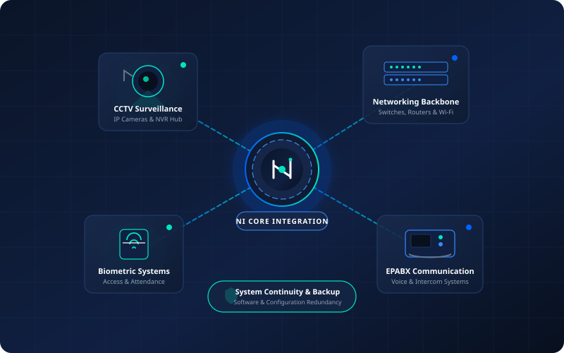
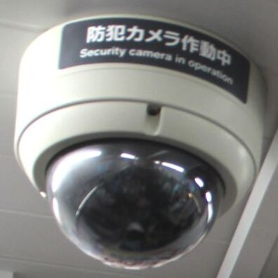
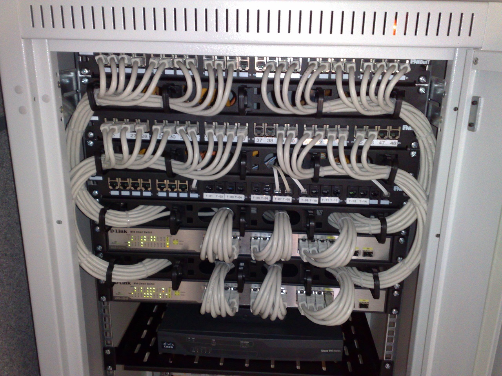
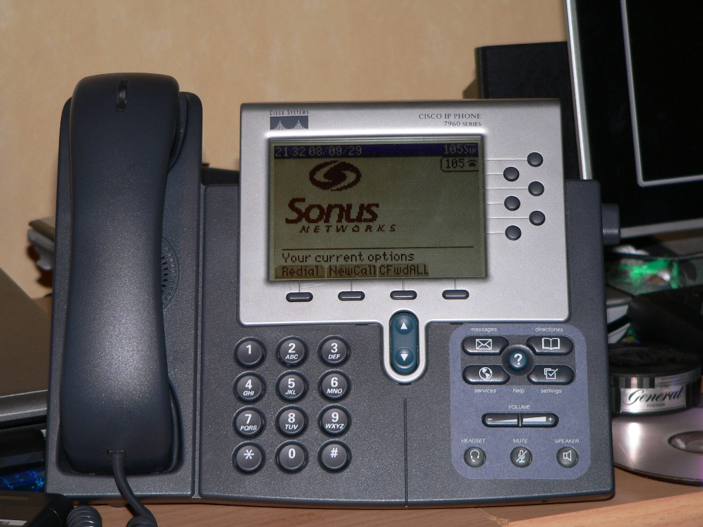
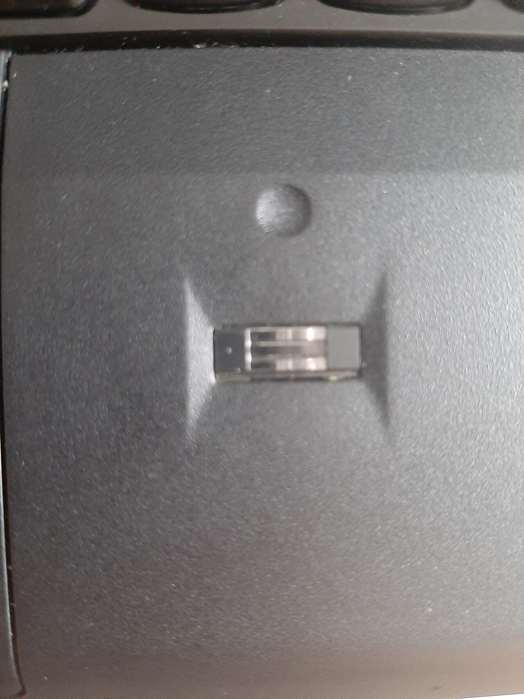
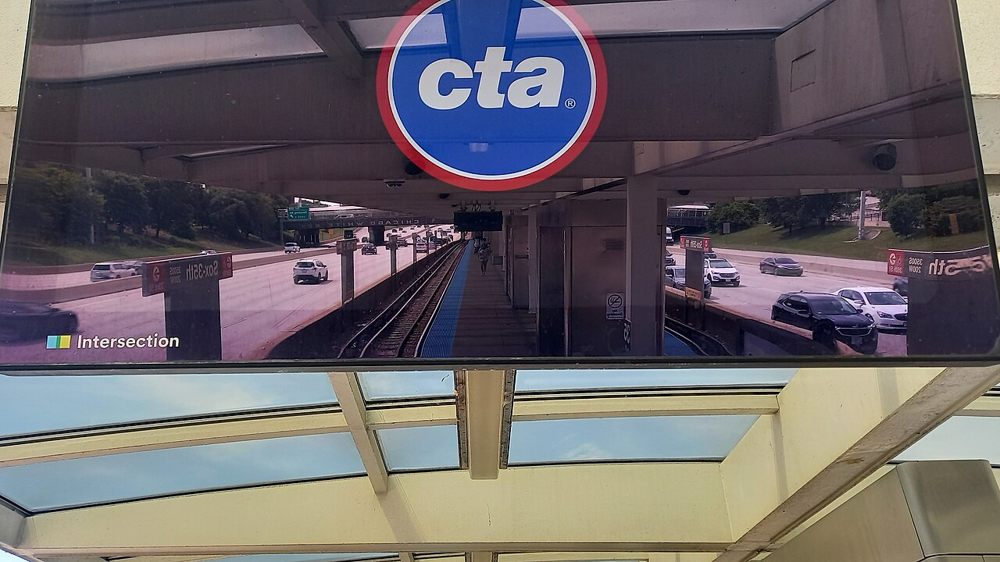

Reliable Technology Integration for Modern Institutions & Enterprises
Nevus Infocom delivers end-to-end technology solutions across South India—from high-definition CCTV surveillance and structured networking to EPABX telephony, biometric access, and disciplined system backup practices.
22+
Years of Integration Experience
South India
Regional Service Coverage
100%
System Backup & Continuity Focus

Built on Over Two Decades of Field Experience
Technology projects succeed through sensible architecture, careful installation, and long-term maintainability. Nevus Infocom combines 22+ years of field experience with rigorous system continuity standards.
End-to-End System Integration
We connect disparate subsystems—surveillance, data networks, voice lines, and door controllers—into one cohesive, manageable infrastructure tailored to your facility.
Disciplined Software & System Backups
Our integration methodology prioritizes proper configuration backups, firmware baselines, and rapid disaster-recovery capabilities to prevent operational downtime.
Regional South India Reach
Operating across South India, we serve schools, universities, commercial enterprises, and government establishments with hands-on site audits, deployment, and ongoing servicing.
Integrated Technology Services
From initial consultation and structured cabling to equipment configuration, testing, and periodic servicing.

CCTV & Video Surveillance
High-resolution IP camera deployments, perimeter monitoring, multi-channel NVR arrays, and centralized control consoles engineered for continuous situational awareness.
Explore Surveillance Solutions →
Networking Infrastructure
Structured Cat6 & fiber cabling, enterprise Layer-2/3 managed switches, secure gateway routers, and high-density Wi-Fi access points for robust connectivity.
Explore Networking Systems →
EPABX & Communications
Scalable IP-PBX telephony, digital key consoles, and multi-extension intercom setups facilitating seamless campus and office internal voice communications.
Explore Communication Systems →
Biometric Access & Attendance
Optical fingerprint, facial recognition terminals, and RFID door access controllers synchronized with institutional attendance tracking systems.
Explore Access Control →
Audio-Visual & Digital Signage
Public address (PA) multi-zone sound distribution, auditorium audio integration, and commercial digital signage displays for instant institutional communication.
Explore AV & Signage Solutions →
Installation, Backup & Servicing
Turnkey physical deployment, structured enclosure assembly, system configuration snapshots, routine preventative maintenance, and ongoing system support.
Explore Support & Maintenance →Equipment Categories We Work With
Nevus Infocom supplies and configures professional-grade hardware strictly as part of integrated project delivery—we are an engineering solutions partner, not an online consumer shop.
CCTV Cameras
IP dome, bullet, and PTZ optics with infrared night vision and wide dynamic range for indoor and perimeter surveillance.
View Technology →DVR & NVR Systems
Multi-channel video recorders with high-density storage bays, RAID configurations, and remote monitoring capabilities.
View Technology →Biometric Devices
Optical fingerprint scanners, contactless facial recognition readers, and electronic access door strike controllers.
View Technology →EPABX Systems
Hybrid and IP-PBX communication switches, digital executive keyphones, intercom hardware, and trunk routing modules.
View Technology →Switches & Routers
Layer 2/3 PoE+ network switches, fiber SFP uplink modules, and robust edge routers configured for segmented VLANs.
View Technology →Modems & Wi-Fi
Enterprise dual-band Wi-Fi 6 access points, wireless mesh controllers, and high-reliability broadband gateway modems.
View Technology →Equipment Enclosures
Standard 19-inch floor-standing server racks (24U–42U), wall-mounted enclosures (6U–12U), and weatherproof outdoor field boxes.
View Technology →Audio & Signage Gear
Commercial 4K continuous-duty display screens, multi-zone public address amplifiers, and ceiling/column speakers.
View Technology →Project Delivery Distinction: Hardware is tailored and procured specifically to satisfy the technical scope of each client project. We do not operate a general retail catalogue or consumer store.
Integration Across Institutional Environments
Tailoring technology architecture to meet the operational demands of educational, governmental, and corporate facilities.
Schools & Colleges
Campus-wide surveillance, biometric staff/student attendance, classroom audio/announcement setups, and secure administrative networking.
- Campus perimeter and exam hall CCTV
- Inter-department EPABX intercom lines
- Auditorium PA and campus digital notices
Small & Medium Businesses
Cost-effective voice communications, office access security, high-speed structured LAN networks, and reliable system backup workflows.
- Office door access control with time tracking
- Multi-extension hybrid IP-PBX communication
- Network rack organization & Wi-Fi coverage
Government & Public Bodies
Compliance-oriented surveillance recording, visitor control access points, structured communications, and audit-ready data retention practices.
- High-retention NVR recording solutions
- Biometric authentication checkpoints
- Scheduled off-site configuration backups
Private Enterprises
Multi-floor corporate infrastructure, structured fiber connectivity, server rack consolidation, and executive communication consoles.
- Gigabit backbone switches & server racks
- Meeting room audio-visual & display systems
- Integrated facility security monitoring
Healthcare & Clinics
Sensitive area access restriction, patient queue digital signage, staff intercom systems, and uninterrupted infrastructure monitoring.
- Restricted-ward biometric door locks
- Emergency code public address calling
- Clean rack enclosures and cable management
Institutions & Complex Facilities
Large multi-building campuses requiring unified systems integration, central monitoring control rooms, and proactive maintenance programs.
- Multi-building optical fiber links
- Centralized control room video matrices
- Preventative quarterly servicing visits
Disciplined Software & System Backup Practices
In technology integration, hardware is only as good as the configuration and data supporting it. Nevus Infocom places primary emphasis on systematic backup protocols for all deployed software, switch configurations, PBX dial plans, and biometric databases.
Should unexpected power anomalies, component failures, or operational adjustments occur, our structured recovery procedures allow rapid restoration to verified baseline states with minimal service disruption.
Our System Integration Standards
We adhere to rigorous installation practices, verified cabling standards, and ongoing maintenance to guarantee dependable operation.
Structured Documentation
Every cable run, port assignment, IP address, and PBX extension is mapped and handed over to the client for clear internal records.
Pre-Commissioning Testing
Comprehensive signal testing, bandwidth verification, camera focus calibration, and backup power switchover checks prior to sign-off.
Preventative Servicing Support
Scheduled preventative maintenance visits to inspect optics, clean rack filters, test battery backups, and update firmware snapshots.
Ready to Plan Your Technology Integration Project?
Whether you need a surveillance overhaul for an educational campus, structured networking for a new facility, or a unified voice and access system, our 22+ years of experience ensures a dependable result.